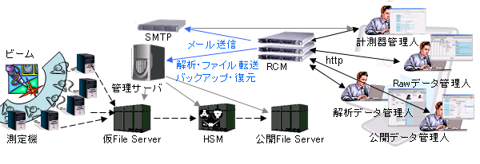
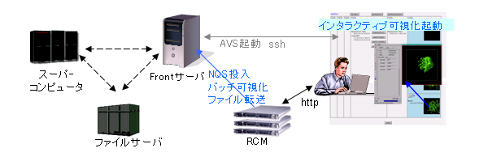

研究フロー統合管理システム 『 RCM System Software 』
構築事例
RCM System Software をご採用いただいているお客様の活用事例をご参考ください。
※掲載事例のお客様名称等につきましては、プライバシー保護のため非開示とさせていただきます。
実験データ管理
測定機器の高性能化に伴いビーム照射実験で出力されるデータサイズとデータ量は急速に増大しております。しかも、実験結果の解析方法も多段で多様になっています。そのためデータの処理ステータスを管理し、整合性をチェックし、復元処理という一連の作業に研究者が割く労力は無視出来ないほど増大しておりました。
RCM を導入し、データベースとメーラーを連携させたシステムを構築されたお客様は、トラブル復旧にかかる時間的、工数的な負荷を大幅に削減することに成功されました。

スーパーコンピュータを用いた大規模シミュレーション
スーパーコンピュータを使用する粒子や流体のシミュレーションは、結果を可視化確認するまでに数多くのプロセスを経ていきます。各プロセス間では、研究者が介在する必要があるため、研究者は長く１つのことに集中出来ず研究の効率が低下する傾向がありました。
また、時系列のデータを得るようなシミュレーションでは、実際に重要な現象の発生する場所を見つけ出すのに大変な苦労をされておりました。
RCM を導入しシミュレーション投入から可視化までを大規模に自動で行うシステムを構築されたお客様は、同じデータに対して異なる切り口のグラフの自動作成や、異なるデータに対して同じ切り口でグラフ化したものを検索・比較することで、研究の効率化と高度化を実現に成功されました。
